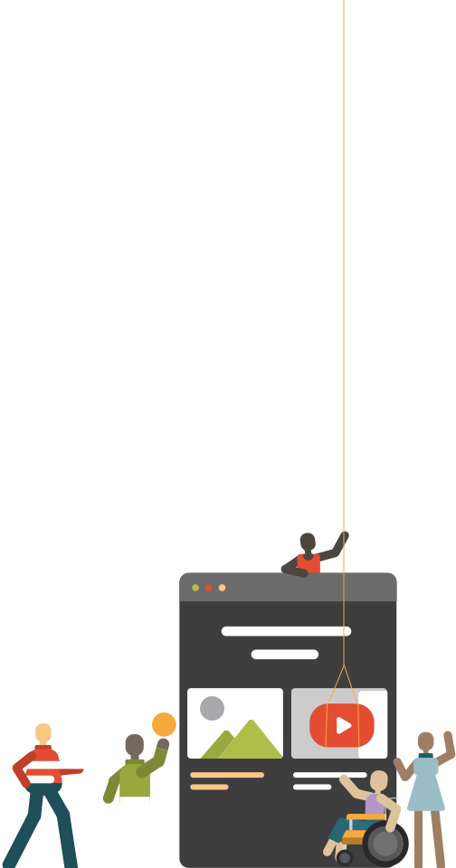

Accessibility Checklist
A seriously simple UI checklist made for designers
Reviewed by a certified Accessibility expert
Includes links to resources, recommended plugins, and tools
Helps you stay organized and aligned with your team
